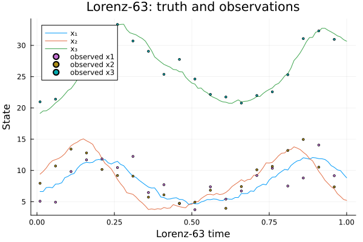
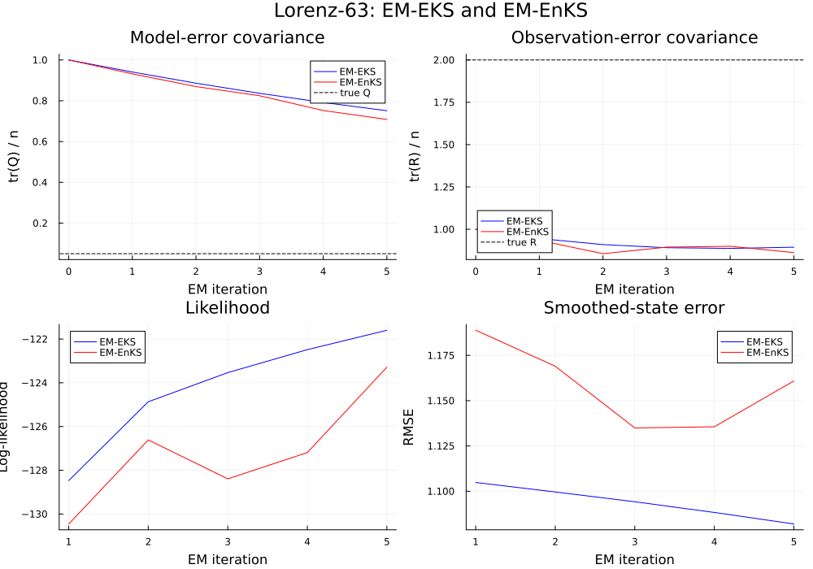
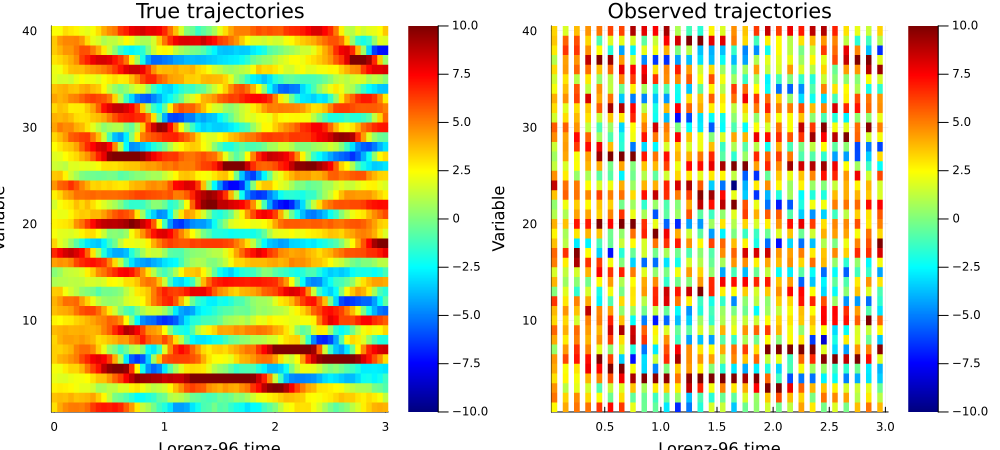
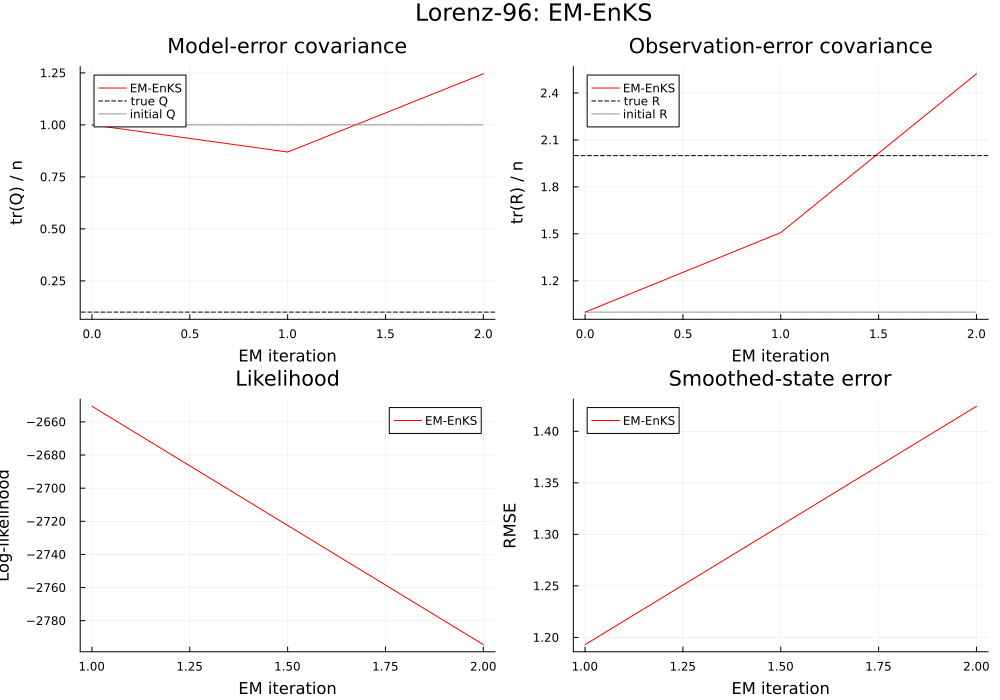

CEDA covariance estimation
This example translates the experiments in the upstream test_CEDA.ipynb notebook into Julia. CEDA estimates model-error covariance $Q$ and observation-error covariance $R$ with expectation-maximization (EM), using either the extended Kalman smoother (EM-EKS) or the ensemble Kalman smoother (EM-EnKS). The experiments below retain both upstream models, observation schedules, initial covariance guesses, ensemble size, and iteration counts.
\[x_k = f(x_{k-1}) + \eta_k,\qquad y_k = h(x_k) + \epsilon_k,\]
where the independent, zero-mean Gaussian errors have covariances $Q$ and $R$. Estimating these covariances with Kalman smoothing and EM is described by Dreano et al. (2017), “Estimating Model-Error Covariances in Nonlinear State-Space Models using Kalman Smoothing and the Expectation–Maximization Algorithm”, Quarterly Journal of the Royal Meteorological Society, 143(705), 1877–1885.
The upstream notebook uses a compiled Fortran model for speed. Here, one classical fourth-order Runge-Kutta step implements each discrete-time transition. Set CEDA_QUICK_DEMO=true to run a short version for smoke tests; the default settings match the notebook.
This is the scope of the upstream notebook: it demonstrates EM-EKS and EM-EnKS on Lorenz-63, then EM-EnKS on Lorenz-96. It does not demonstrate the separate ETKS or adaptive/experimental algorithms found elsewhere in CEDA.
using AnalogDataAssimilation
using LinearAlgebra
using Plots
using Random
using Statistics
const QUICK_DEMO = get(ENV, "CEDA_QUICK_DEMO", "false") == "true"
function rk4_step(f, x, dt)
k1 = f(x)
k2 = f(x .+ (dt / 2) .* k1)
k3 = f(x .+ (dt / 2) .* k2)
k4 = f(x .+ dt .* k3)
return x .+ (dt / 6) .* (k1 .+ 2 .* k2 .+ 2 .* k3 .+ k4)
end
function generate_truth(dynamics, initial_state, steps, Q, rng)
nx = length(initial_state)
states = zeros(Float64, nx, steps + 1)
states[:, 1] .= initial_state
noise_factor = cholesky(Symmetric(Q)).L
for t in 1:steps
states[:, t + 1] .= dynamics(@view(states[:, t])) + noise_factor * randn(rng, nx)
end
return states
end
function generate_observations(observation_operator, states, R, interval, rng)
no, steps = size(R, 1), size(states, 2) - 1
observations = fill(NaN, no, steps)
noise_factor = cholesky(Symmetric(R)).L
for t in 1:interval:steps
observations[:, t] .= observation_operator(@view(states[:, t + 1])) +
noise_factor * randn(rng, no)
end
return observations
end
function climatology(states)
background = vec(mean(states, dims = 2))
centered = states .- background
covariance = centered * centered' ./ (size(states, 2) - 1)
return background, covariance
end
function compare_em_results(eks, enks, Qtrue, Rtrue, nx, no, title)
iterations = length(eks.loglikelihood)
em_steps = 0:iterations
pQ = plot(
em_steps,
[tr(eks.model_noise_covariance[:, :, i]) / nx for i in 1:iterations+1];
label = "EM-EKS",
color = :blue,
xlabel = "EM iteration",
ylabel = "tr(Q) / n",
title = "Model-error covariance",
)
plot!(pQ, em_steps, [tr(enks.model_noise_covariance[:, :, i]) / nx for i in 1:iterations+1];
label = "EM-EnKS", color = :red)
hline!(pQ, [tr(Qtrue) / nx]; label = "true Q", color = :black, linestyle = :dash)
pR = plot(
em_steps,
[tr(eks.observation_noise_covariance[:, :, i]) / no for i in 1:iterations+1];
label = "EM-EKS",
color = :blue,
xlabel = "EM iteration",
ylabel = "tr(R) / n",
title = "Observation-error covariance",
)
plot!(pR, em_steps, [tr(enks.observation_noise_covariance[:, :, i]) / no for i in 1:iterations+1];
label = "EM-EnKS", color = :red)
hline!(pR, [tr(Rtrue) / no]; label = "true R", color = :black, linestyle = :dash)
pL = plot(1:iterations, eks.loglikelihood; label = "EM-EKS", color = :blue,
xlabel = "EM iteration", ylabel = "Log-likelihood", title = "Likelihood")
plot!(pL, 1:iterations, enks.loglikelihood; label = "EM-EnKS", color = :red)
pE = plot(1:iterations, eks.rmse; label = "EM-EKS", color = :blue,
xlabel = "EM iteration", ylabel = "RMSE", title = "Smoothed-state error")
plot!(pE, 1:iterations, enks.rmse; label = "EM-EnKS", color = :red)
return plot(pQ, pR, pL, pE; layout = (2, 2), size = (1000, 700), plot_title = title)
endcompare_em_results (generic function with 1 method)Lorenz-63: comparing EM-EKS and EM-EnKS
The first experiment uses the Lorenz-63 system with $dt=0.01$, $Q=0.05I$, and $R=2I$. Observations are available every five model steps. The original notebook uses a 1,000-step sequence, 500 EM iterations, and 100 ensemble members.
Random.seed!(9)
rng_l63 = MersenneTwister(9)
nx_l63 = 3
dt_l63 = 0.01
sigma, rho, beta = 10.0, 28.0, 8 / 3
function lorenz63_rhs(x)
return [
sigma * (x[2] - x[1]),
x[1] * (rho - x[3]) - x[2],
x[1] * x[2] - beta * x[3],
]
end
function lorenz63_rhs_jacobian(x)
return [
-sigma sigma 0.0
rho - x[3] -1.0 -x[1]
x[2] x[1] -beta
]
end
function lorenz63_transition(x)
return rk4_step(lorenz63_rhs, x, dt_l63)
end
function lorenz63_jacobian(x)
identity_jacobian = Matrix{Float64}(I, nx_l63, nx_l63)
k1 = lorenz63_rhs(x)
J1 = lorenz63_rhs_jacobian(x)
x2 = x .+ (dt_l63 / 2) .* k1
J2 = lorenz63_rhs_jacobian(x2) * (identity_jacobian .+ (dt_l63 / 2) .* J1)
k2 = lorenz63_rhs(x2)
x3 = x .+ (dt_l63 / 2) .* k2
J3 = lorenz63_rhs_jacobian(x3) * (identity_jacobian .+ (dt_l63 / 2) .* J2)
k3 = lorenz63_rhs(x3)
x4 = x .+ dt_l63 .* k3
J4 = lorenz63_rhs_jacobian(x4) * (identity_jacobian .+ dt_l63 .* J3)
return identity_jacobian .+ (dt_l63 / 6) .* (J1 .+ 2 .* J2 .+ 2 .* J3 .+ J4)
end
h_l63(x) = copy(x)
H_l63 = Matrix{Float64}(I, nx_l63, nx_l63)
steps_l63 = QUICK_DEMO ? 100 : 1000
iterations_l63 = QUICK_DEMO ? 5 : 500
members_l63 = QUICK_DEMO ? 32 : 100
Qtrue_l63 = 0.05 .* Matrix{Float64}(I, nx_l63, nx_l63)
Rtrue_l63 = 2.0 .* Matrix{Float64}(I, nx_l63, nx_l63)
initial_l63 = [6.39435776, 9.23172442, 19.15323224]
truth_l63 = generate_truth(lorenz63_transition, initial_l63, steps_l63, Qtrue_l63, rng_l63)
observations_l63 = generate_observations(h_l63, truth_l63, Rtrue_l63, 5, rng_l63)
time_l63 = (1:steps_l63) .* dt_l630.01:0.01:1.0The background mean and covariance are estimated from the simulated truth, as in CEDA. The initial $Q$ and $R$ guesses are both identity matrices.
xb_l63, B_l63 = climatology(truth_l63)
Qinit_l63 = Matrix{Float64}(I, nx_l63, nx_l63)
Rinit_l63 = Matrix{Float64}(I, nx_l63, nx_l63)3×3 Matrix{Float64}:
1.0 0.0 0.0
0.0 1.0 0.0
0.0 0.0 1.0Plot true state trajectories and the intermittent observations.
p_l63_data = plot(time_l63, truth_l63[:, 2:end]'; label = ["x₁" "x₂" "x₃"],
xlabel = "Lorenz-63 time", ylabel = "State",
title = "Lorenz-63: truth and observations")
for variable in 1:nx_l63
scatter!(p_l63_data, time_l63, observations_l63[variable, :];
label = "observed x$(variable)", markersize = 2)
end
p_l63_data
Fit both smoothers using the same model, observations, and initial distribution. The EKS uses the exact Jacobian of the RK4 transition and the identity observation Jacobian.
eks_l63 = em_eks(
observations_l63;
initial_state = xb_l63,
initial_covariance = B_l63,
model_noise_covariance = Qinit_l63,
observation_noise_covariance = Rinit_l63,
dynamics = lorenz63_transition,
dynamics_jacobian = lorenz63_jacobian,
observation_operator = h_l63,
observation_jacobian = _ -> H_l63,
iterations = iterations_l63,
truth = truth_l63,
)
enks_l63 = em_enks(
observations_l63;
initial_state = xb_l63,
initial_covariance = B_l63,
model_noise_covariance = Qinit_l63,
observation_noise_covariance = Rinit_l63,
dynamics = lorenz63_transition,
observation_matrix = H_l63,
ensemble_size = members_l63,
iterations = iterations_l63,
truth = truth_l63,
rng = rng_l63,
)CovarianceEMResult(:enks, [5.695960474126119 5.03799372673222 … 9.31258351679515 9.103423983716144; 6.959396890341291 7.310462448284773 … 6.442767618419119 6.048508807797552; 21.965387620828352 21.29755152509209 … 30.697272518904448 30.462903289509235;;; 5.8236803201126675 5.381227769866503 … 8.465703542312518 8.141902569504882; 7.404235617108295 7.945361783997836 … 6.2399453474842295 6.097118062102521; 21.85474654173182 21.478680154165154 … 30.49179206965762 30.460607971828797;;; 5.623469557335175 5.552736193092404 … 9.096373332318898 8.862190483640637; 7.286627300135768 7.785904693672219 … 6.275795208979351 5.89972449978466; 21.75075481506471 21.159257682754166 … 30.695054561164824 30.603448964337918;;; 5.585076980920882 5.161944185078948 … 9.036248587905565 8.729745032178556; 7.263816188750632 8.0809212620929 … 6.465753423218032 6.509744968666107; 21.607683384288872 21.127947457631404 … 30.276246173566143 30.10011844210478;;; 5.540855561121572 5.3369337438196025 … 9.200855740150864 8.885973916643584; 7.270115696242842 7.924953733899566 … 6.13522722712732 5.795175958710403; 21.510188884135932 20.995165681574356 … 31.278741499151 30.95293199005046], [0.48730076449254695 0.6381416998817612 0.20586576522955508; 0.6381416998817612 1.2118993312468989 0.18171874775802122; 0.20586576522955508 0.18171874775802122 0.7523043258978082;;; 0.6451599444436735 0.28728989299818164 -0.10506979671110504; 0.28728989299818164 0.4898156430267051 -0.017487659382594188; -0.10506979671110504 -0.017487659382594188 0.4672822525873474;;; 1.5198472119212467 0.12761830894615916 -0.14049725555514753; 0.12761830894615916 1.2401366798780387 0.3031063128408309; -0.14049725555514753 0.3031063128408309 0.7179300555439959;;; … ;;; 2.5005913118293654 0.13015370152839462 0.9497534939952585; 0.13015370152839462 1.962350940689252 -0.06876153999943067; 0.9497534939952585 -0.06876153999943067 2.057492790416067;;; 2.5621901993666354 0.1783271634253908 0.8541782966422115; 0.1783271634253908 3.1941868811536427 -0.09353597347466806; 0.8541782966422115 -0.09353597347466806 3.29200076751382;;; 3.231181958146016 -0.30073835200238674 1.1355359228708; -0.30073835200238674 5.038206386464445 -0.03355636554612728; 1.1355359228708 -0.03355636554612728 4.467082324999119;;;; 0.27005410686164877 0.3505079727645072 0.07664219459127862; 0.3505079727645072 0.802786454719533 -0.012390270390121383; 0.07664219459127862 -0.012390270390121383 0.34180314991815114;;; 0.5524368283138541 0.03885632746306172 0.023258212348337234; 0.03885632746306172 0.4759686782021503 0.04360027983729176; 0.023258212348337234 0.04360027983729176 0.3962697346369233;;; 1.4520989409589706 -0.11789382549778789 0.30715422749849525; -0.11789382549778789 1.3818134270374585 -0.3499800730802554; 0.30715422749849525 -0.3499800730802554 1.5054630396637534;;; … ;;; 3.033609687743148 0.2919676560666395 0.03325030357753376; 0.2919676560666395 2.8202776338084528 -0.08059859452523556; 0.03325030357753376 -0.08059859452523556 3.0682151094749446;;; 4.586192723288354 1.7189379899738033 0.4217088507398997; 1.7189379899738033 5.342035644756325 -0.6873235079933206; 0.4217088507398997 -0.6873235079933206 3.959830399898999;;; 4.4850968664996955 0.9205867709444129 0.05887276146556466; 0.9205867709444129 5.33273112705888 -0.18888644449030148; 0.05887276146556466 -0.18888644449030148 2.8680897431616863;;;; 0.14058209068693717 0.12495617918970067 0.06998631103192818; 0.12495617918970067 0.33174209718508385 -0.01870483867639503; 0.06998631103192818 -0.01870483867639503 0.3605025385394672;;; 0.5218561712591602 0.20488424035212016 0.03161899342604266; 0.20488424035212016 0.5936068038404815 0.058614315700437736; 0.03161899342604266 0.058614315700437736 0.3998162856335789;;; 1.2862588286384826 -0.09810996049289032 -0.16358916205542154; -0.09810996049289032 1.0429330310097618 -0.11214956530592783; -0.16358916205542154 -0.11214956530592783 0.7989854218707294;;; … ;;; 2.030967578535365 0.15195181172565178 0.14679274939427198; 0.15195181172565178 3.098825691346835 0.36211499131484254; 0.14679274939427198 0.36211499131484254 2.6511973361255814;;; 2.5989059587497163 0.4760116981592369 -0.1382006170564606; 0.4760116981592369 3.685832890030796 0.7554584762957075; -0.1382006170564606 0.7554584762957075 2.814190425968237;;; 3.353474660271778 1.0062151895750913 -0.7302555892114516; 1.0062151895750913 4.265245330872532 0.5268097362991614; -0.7302555892114516 0.5268097362991614 4.107979084727497;;;; 0.10420502727373412 0.08896027678844243 0.07938004454888845; 0.08896027678844243 0.20750665534523097 0.02479953019152299; 0.07938004454888845 0.02479953019152299 0.32654611343242274;;; 0.4216667331759731 0.11450863282143281 0.12642942418986725; 0.11450863282143281 0.4268695041880603 0.055407599093329735; 0.12642942418986725 0.055407599093329735 0.3041777402636901;;; 1.669524986304841 0.22837963331387995 0.03642945211398703; 0.22837963331387995 0.90282895304285 0.0870469042314302; 0.03642945211398703 0.0870469042314302 0.6666278163969904;;; … ;;; 1.1982671160611778 0.45639890858117255 -0.00967564621000313; 0.45639890858117255 1.2489369121129927 0.6215008829318661; -0.00967564621000313 0.6215008829318661 2.633637514193334;;; 2.438555975931634 0.46206807580451487 -0.3087186750011688; 0.46206807580451487 1.3197323188879704 -0.04377890199512934; -0.3087186750011688 -0.04377890199512934 3.4179571279370857;;; 3.1552435645069523 0.9124257640471615 0.4025294560752768; 0.9124257640471615 1.7455389991605716 0.4310990106755721; 0.4025294560752768 0.4310990106755721 4.228252737176746;;;; 0.09005113414071358 0.08467858224056311 0.08820349883861643; 0.08467858224056311 0.18821313142393295 0.08650138642584877; 0.08820349883861643 0.08650138642584877 0.3495270850091751;;; 0.2512853600473123 0.04175424810391308 0.014224354652073902; 0.04175424810391308 0.35771558290906297 0.004651230621182335; 0.014224354652073902 0.004651230621182335 0.3929734286919159;;; 1.3403735223739515 0.05821786672945748 0.2029757225854355; 0.05821786672945748 0.5081108034111305 0.10617498038936994; 0.2029757225854355 0.10617498038936994 0.6794445880907937;;; … ;;; 2.1145090369429203 0.9623596421695507 0.9863566087153484; 0.9623596421695507 2.028873091464732 0.7622607071268648; 0.9863566087153484 0.7622607071268648 2.095615436203572;;; 2.552148142066971 1.0716346958584522 1.020432641955367; 1.0716346958584522 2.5571331167028073 1.1562264941156777; 1.020432641955367 1.1562264941156777 2.98529541536446;;; 3.5600104939127855 1.4388728299002898 1.3615619702748158; 1.4388728299002898 3.0892070441200934 0.99960793716889; 1.3615619702748158 0.99960793716889 3.7249902606175267], [8.404605960414335 5.695960474126119 … 5.585076980920882 5.540855561121572; 8.844593352413028 6.959396890341291 … 7.263816188750632 7.270115696242842; 26.244185023271125 21.965387620828352 … 21.607683384288872 21.510188884135932], [6.056094807170383 5.517912501903896 7.549270429547588; 5.517912501903896 12.002041695161033 -1.2034775117652285; 7.549270429547588 -1.2034775117652285 19.968539063716072;;; 0.4873007644925467 0.6381416998817611 0.20586576522955474; 0.638141699881761 1.2118993312468982 0.18171874775802116; 0.20586576522955471 0.18171874775802127 0.7523043258978084;;; 0.2700541068616484 0.3505079727645072 0.07664219459127829; 0.3505079727645072 0.8027864547195331 -0.01239027039012125; 0.07664219459127829 -0.012390270390121257 0.3418031499181517;;; 0.14058209068693714 0.12495617918970064 0.06998631103192807; 0.12495617918970064 0.33174209718508396 -0.018704838676395025; 0.0699863110319281 -0.018704838676395025 0.36050253853946723;;; 0.10420502727373421 0.08896027678844236 0.07938004454888828; 0.08896027678844236 0.20750665534523086 0.024799530191522964; 0.07938004454888828 0.024799530191522964 0.3265461134324227;;; 0.0900511341407137 0.08467858224056332 0.08820349883861636; 0.08467858224056331 0.18821313142393312 0.08650138642584879; 0.08820349883861636 0.08650138642584879 0.3495270850091752], [1.0 0.0 0.0; 0.0 1.0 0.0; 0.0 0.0 1.0;;; 0.9752135025700286 -0.004579261731267686 0.008572862723496888; -0.0045792617312676795 0.8730824028897012 0.02194145219363268; 0.008572862723496888 0.02194145219363268 0.9473930018204348;;; 0.9500030704644514 0.0006902550667155574 0.014569615029423472; 0.0006902550667155574 0.7869398722088993 0.017974001441349072; 0.014569615029423472 0.017974001441349072 0.8714104730192694;;; 0.9094573934110978 0.006077136124815738 0.017018674504911152; 0.006077136124815724 0.7416867633097833 0.04602681365300933; 0.017018674504911152 0.04602681365300933 0.8224971276803184;;; 0.8363581856835364 0.02242171451362085 0.012361077154770778; 0.02242171451362085 0.6923668521219347 0.04406118326398145; 0.012361077154770805 0.04406118326398151 0.7274929989052749;;; 0.8294579638326045 0.002674878655397721 0.021770892394823257; 0.002674878655397714 0.621616582116608 0.05287105925175939; 0.02177089239482327 0.05287105925175939 0.6740713153474751], [1.0 0.0 0.0; 0.0 1.0 0.0; 0.0 0.0 1.0;;; 1.0521150384466682 0.09223318770923622 -0.051921737216235025; 0.09223318770923628 0.8156557098133881 0.024260965452512384; -0.05192173721623505 0.02426096545251237 0.935845000217311;;; 1.0082260671533474 0.13065569582730277 -0.08736321258659252; 0.1306556958273028 0.7334980801359403 0.06370404968806644; -0.08736321258659249 0.06370404968806644 0.825322788179471;;; 1.1147546736502123 0.17985751999040184 -0.0989219869693122; 0.17985751999040178 0.6824785049765225 0.05893346407723357; -0.0989219869693122 0.05893346407723357 0.8867388451693733;;; 1.2684879380619174 0.17325423211378843 -0.10448077914614119; 0.17325423211378843 0.5790695175093055 0.07723003899758094; -0.10448077914614118 0.07723003899758094 0.8510952062895224;;; 1.1795767807020086 0.19461812349404237 -0.09342494370241677; 0.19461812349404237 0.5254573915342045 0.06105688511902435; -0.09342494370241677 0.06105688511902433 0.8817177962681964], [-130.45573476352868, -126.61299000827258, -128.39215698769448, -127.1903218932653, -123.28489724123455], [1.188870401710998, 1.169004921074677, 1.1349324061759885, 1.1355899636130546, 1.160887277240946])Compare normalized traces of $Q$ and $R$ to their true values, plus observed-data likelihood and smoothed-state RMSE.
p_l63_comparison = compare_em_results(
eks_l63, enks_l63, Qtrue_l63, Rtrue_l63, nx_l63, nx_l63,
"Lorenz-63: EM-EKS and EM-EnKS",
)
CEDA reports that EM-EnKS approaches the true covariance values more closely, while EM-EKS performs poorly with the relatively sparse observations. Increasing the ensemble size can improve the EnKS estimates.
Lorenz-96: EM-EnKS in a higher-dimensional system
The second experiment uses Lorenz-96 with 40 state variables, forcing $F=8$, and $dt=0.05$. The original notebook generates a 450-step trajectory, discards its first 50 states as spin-up, and observes all variables every two steps. The EM-EnKS uses 100 members and 50 iterations.
rng_l96 = MersenneTwister(1)
nx_l96 = 40
dt_l96 = 0.05
forcing_l96 = 8.0
function lorenz96_rhs(x)
return [
(x[mod1(j + 1, nx_l96)] - x[mod1(j - 2, nx_l96)]) *
x[mod1(j - 1, nx_l96)] - x[j] + forcing_l96
for j in 1:nx_l96
]
end
lorenz96_transition(x) = rk4_step(lorenz96_rhs, x, dt_l96)
steps_l96 = QUICK_DEMO ? 70 : 450
spinup_l96 = QUICK_DEMO ? 10 : 50
fit_steps_l96 = QUICK_DEMO ? 60 : 400
iterations_l96 = QUICK_DEMO ? 2 : 50
members_l96 = QUICK_DEMO ? 40 : 100
Qtrue_l96 = 0.1 .* Matrix{Float64}(I, nx_l96, nx_l96)
Rtrue_l96 = 2.0 .* Matrix{Float64}(I, nx_l96, nx_l96)
truth_l96_all = generate_truth(
lorenz96_transition, zeros(nx_l96), steps_l96, Qtrue_l96, rng_l96,
)
observations_l96_all = generate_observations(
identity, truth_l96_all, Rtrue_l96, 2, rng_l96,
)40×70 Matrix{Float64}:
0.343461 NaN 1.90894 NaN … NaN 5.20789 NaN 3.93397 NaN
-1.07651 NaN 1.24919 NaN NaN 2.90758 NaN 1.11955 NaN
0.538266 NaN 2.14216 NaN NaN 1.95686 NaN -0.400511 NaN
0.99008 NaN 0.835152 NaN NaN -2.99744 NaN -3.44886 NaN
1.34322 NaN -1.02774 NaN NaN -2.86803 NaN -3.93338 NaN
2.89318 NaN 2.96496 NaN … NaN 7.2807 NaN 1.8735 NaN
3.3451 NaN 2.32128 NaN NaN 4.85875 NaN 9.78507 NaN
0.505335 NaN -0.53739 NaN NaN -0.439881 NaN -3.58973 NaN
0.594711 NaN 3.55898 NaN NaN 1.36367 NaN 2.47598 NaN
1.79347 NaN -0.56479 NaN NaN 10.8017 NaN 5.52715 NaN
⋮ ⋱ ⋮
2.0097 NaN 0.791271 NaN NaN 5.4551 NaN 4.68188 NaN
1.28097 NaN 0.531521 NaN NaN 5.1701 NaN 4.55594 NaN
-0.15053 NaN 2.32617 NaN NaN -2.0686 NaN -1.57909 NaN
1.6588 NaN 0.159541 NaN NaN 2.4108 NaN 1.68889 NaN
0.695444 NaN 0.271523 NaN … NaN 8.92086 NaN 9.43023 NaN
1.63114 NaN 1.17126 NaN NaN 10.2029 NaN 1.89184 NaN
-0.0150055 NaN 1.61948 NaN NaN -3.72906 NaN -6.63768 NaN
1.06411 NaN -0.176548 NaN NaN -1.23241 NaN 0.918737 NaN
-1.48654 NaN 0.0915879 NaN NaN 1.39814 NaN 3.34057 NaNRetain the same 400 forecast transitions after the 50-step spin-up used in the notebook. The initial state and its successor are both included in truth_l96, while its 400 observation columns correspond to the transitions.
truth_l96 = truth_l96_all[:, spinup_l96+1:spinup_l96+fit_steps_l96+1]
observations_l96 = observations_l96_all[:, spinup_l96+1:spinup_l96+fit_steps_l96]
time_l96 = (0:fit_steps_l96) .* dt_l96
xb_l96, B_l96 = climatology(truth_l96)
Qinit_l96 = Matrix{Float64}(I, nx_l96, nx_l96)
Rinit_l96 = Matrix{Float64}(I, nx_l96, nx_l96)
H_l96 = Matrix{Float64}(I, nx_l96, nx_l96)40×40 Matrix{Float64}:
1.0 0.0 0.0 0.0 0.0 0.0 0.0 0.0 … 0.0 0.0 0.0 0.0 0.0 0.0 0.0
0.0 1.0 0.0 0.0 0.0 0.0 0.0 0.0 0.0 0.0 0.0 0.0 0.0 0.0 0.0
0.0 0.0 1.0 0.0 0.0 0.0 0.0 0.0 0.0 0.0 0.0 0.0 0.0 0.0 0.0
0.0 0.0 0.0 1.0 0.0 0.0 0.0 0.0 0.0 0.0 0.0 0.0 0.0 0.0 0.0
0.0 0.0 0.0 0.0 1.0 0.0 0.0 0.0 0.0 0.0 0.0 0.0 0.0 0.0 0.0
0.0 0.0 0.0 0.0 0.0 1.0 0.0 0.0 … 0.0 0.0 0.0 0.0 0.0 0.0 0.0
0.0 0.0 0.0 0.0 0.0 0.0 1.0 0.0 0.0 0.0 0.0 0.0 0.0 0.0 0.0
0.0 0.0 0.0 0.0 0.0 0.0 0.0 1.0 0.0 0.0 0.0 0.0 0.0 0.0 0.0
0.0 0.0 0.0 0.0 0.0 0.0 0.0 0.0 0.0 0.0 0.0 0.0 0.0 0.0 0.0
0.0 0.0 0.0 0.0 0.0 0.0 0.0 0.0 0.0 0.0 0.0 0.0 0.0 0.0 0.0
⋮ ⋮ ⋱ ⋮
0.0 0.0 0.0 0.0 0.0 0.0 0.0 0.0 0.0 0.0 0.0 0.0 0.0 0.0 0.0
0.0 0.0 0.0 0.0 0.0 0.0 0.0 0.0 0.0 0.0 0.0 0.0 0.0 0.0 0.0
0.0 0.0 0.0 0.0 0.0 0.0 0.0 0.0 1.0 0.0 0.0 0.0 0.0 0.0 0.0
0.0 0.0 0.0 0.0 0.0 0.0 0.0 0.0 0.0 1.0 0.0 0.0 0.0 0.0 0.0
0.0 0.0 0.0 0.0 0.0 0.0 0.0 0.0 … 0.0 0.0 1.0 0.0 0.0 0.0 0.0
0.0 0.0 0.0 0.0 0.0 0.0 0.0 0.0 0.0 0.0 0.0 1.0 0.0 0.0 0.0
0.0 0.0 0.0 0.0 0.0 0.0 0.0 0.0 0.0 0.0 0.0 0.0 1.0 0.0 0.0
0.0 0.0 0.0 0.0 0.0 0.0 0.0 0.0 0.0 0.0 0.0 0.0 0.0 1.0 0.0
0.0 0.0 0.0 0.0 0.0 0.0 0.0 0.0 0.0 0.0 0.0 0.0 0.0 0.0 1.0The panels show all 40 truth and observed trajectories; missing observations remain blank in the second heatmap.
p_l96_truth = heatmap(
time_l96, 1:nx_l96, truth_l96;
color = :jet, clims = (-10, 10), xlabel = "Lorenz-96 time",
ylabel = "Variable", title = "True trajectories",
)
p_l96_observations = heatmap(
time_l96[2:end], 1:nx_l96, observations_l96;
color = :jet, clims = (-10, 10), xlabel = "Lorenz-96 time",
ylabel = "Variable", title = "Observed trajectories",
)
p_l96_data = plot(p_l96_truth, p_l96_observations; layout = (1, 2), size = (1000, 450))
Estimate $Q$ and $R$ with EM-EnKS. Since the Lorenz-96 observation operator is identity, the notebook's ensemble-smoother experiment transfers directly to em_enks.
enks_l96 = em_enks(
observations_l96;
initial_state = xb_l96,
initial_covariance = B_l96,
model_noise_covariance = Qinit_l96,
observation_noise_covariance = Rinit_l96,
dynamics = lorenz96_transition,
observation_matrix = H_l96,
ensemble_size = members_l96,
iterations = iterations_l96,
truth = truth_l96,
rng = rng_l96,
)CovarianceEMResult(:enks, [1.6774906725637373 1.6625361184370486 … 3.9991446379276967 4.391595252340799; 2.613058911661855 4.43395134780498 … 1.7625900988240548 1.4672051891614857; … ; 4.074950808479702 3.146603793883084 … 2.0510837470208267 1.3639764020877623; 3.984069556497245 2.8510679111540056 … 2.1803905632192278 3.304557826106958;;; 1.6774939910827307 1.1418458598990608 … 3.955146123411555 4.387224233841171; 2.61305687677775 2.429921190457776 … 1.510799470913446 1.1283366065341016; … ; 4.074951362675234 2.9990541351419227 … 1.2400522591087317 0.6301411272638847; 3.9840695715598784 3.3940090642204246 … 2.596286827695957 3.4529307263176725], [1.3768559547101708e-11 -4.941083635212584e-12 … -1.7857281770457157e-12 -2.5601896817301507e-12; -4.941083635212584e-12 1.9159305904903353e-12 … 5.016218379957217e-13 9.092032405550908e-13; … ; -1.7857281770457157e-12 5.016218379957217e-13 … 4.821743532425515e-13 3.225092640397905e-13; -2.5601896817301507e-12 9.092032405550908e-13 … 3.225092640397905e-13 6.050739043046048e-13;;; 3.2788899565477884e-12 -7.353473792504478e-12 … 3.4337077611602043e-12 -3.673358823466546e-13; -7.353473792504478e-12 1.7449122208550365e-11 … -7.948293020912167e-12 7.014952302412688e-13; … ; 3.4337077611602043e-12 -7.948293020912167e-12 … 3.7581863463276574e-12 -4.2476774434758996e-13; -3.673358823466546e-13 7.014952302412688e-13 … -4.2476774434758996e-13 2.091847861617412e-13;;; 2.8367520896464273e-11 -1.5776655953440085e-11 … 1.323170510938484e-11 3.1667013765308635e-12; -1.5776655953440085e-11 1.2873146449322822e-11 … -6.252410123270505e-12 -2.1842293135763557e-12; … ; 1.323170510938484e-11 -6.252410123270505e-12 … 6.80644405377449e-12 1.5768295460731767e-12; 3.1667013765308635e-12 -2.1842293135763557e-12 … 1.5768295460731767e-12 8.041199445565677e-13;;; … ;;; 0.5266635576178854 -0.18792718790486537 … -0.04691995758834922 -0.13603886934564574; -0.18792718790486537 0.5625289922279231 … 0.12048879581775185 -0.07476673866039668; … ; -0.04691995758834922 0.12048879581775185 … 0.33514188892729635 0.00016828911608871054; -0.13603886934564574 -0.07476673866039668 … 0.00016828911608871054 0.4541764768675384;;; 0.43110348476617105 -0.028456610224546673 … 0.006911525834537427 -0.20389541590552115; -0.028456610224546673 0.5136613760541328 … 0.1215927448498967 0.023382386494087953; … ; 0.006911525834537427 0.1215927448498967 … 0.5992776544554195 0.006422012142957543; -0.20389541590552115 0.023382386494087953 … 0.006422012142957543 0.43930723113149767;;; 1.3988204861654527 -0.015323405334750602 … -0.08463073265404865 -0.2820109621012401; -0.015323405334750602 0.9314540685919874 … -0.15752880457444923 0.35906323805520474; … ; -0.08463073265404865 -0.15752880457444923 … 1.7979501035572758 0.16205991726576818; -0.2820109621012401 0.35906323805520474 … 0.16205991726576818 1.2190142503761732;;;; 3.66218720936727e-24 -1.4706514643726084e-24 … -2.539608381965801e-25 -3.083195845447388e-25; -1.4706514643726084e-24 6.981019877928717e-25 … 9.01547359403523e-26 6.0177596770697204e-27; … ; -2.539608381965801e-25 9.01547359403523e-26 … 6.288489660220627e-26 6.64504164169877e-26; -3.083195845447388e-25 6.0177596770697204e-27 … 6.64504164169877e-26 3.686028229383268e-25;;; 1.7309018205252294e-12 -4.881356892860942e-12 … -1.8935969372239523e-13 -2.0167504559085537e-12; -4.881356892860942e-12 1.7211522569931556e-11 … 5.546250254076444e-13 7.1225338484204834e-12; … ; -1.8935969372239523e-13 5.546250254076444e-13 … 1.4459782558203823e-13 2.7875503875608177e-13; -2.0167504559085537e-12 7.1225338484204834e-12 … 2.7875503875608177e-13 3.0092971576911004e-12;;; 2.0990014029189352e-12 -3.029989629637501e-12 … -3.159422159341852e-12 -7.877007399183747e-13; -3.029989629637501e-12 1.2273496747878607e-11 … 1.3673941351604065e-11 8.601153716967539e-12; … ; -3.159422159341852e-12 1.3673941351604065e-11 … 1.6768358384289843e-11 1.13488981992735e-11; -7.877007399183747e-13 8.601153716967539e-12 … 1.13488981992735e-11 9.271824305544962e-12;;; … ;;; 0.20108446451941836 0.025387958066746288 … -0.07152091048331341 0.056653183613967394; 0.025387958066746288 0.3253708257389877 … -0.07799269390514334 -0.038941800618222194; … ; -0.07152091048331341 -0.07799269390514334 … 0.28866405996022243 0.0063718200809756; 0.056653183613967394 -0.038941800618222194 … 0.0063718200809756 0.20163915077246303;;; 0.3277794831031954 -0.13118667195626715 … 0.057599966583165275 0.03723870187952693; -0.13118667195626715 0.45313029424661466 … -0.007295055708134066 0.023044319080835325; … ; 0.057599966583165275 -0.007295055708134066 … 0.1866406442169686 0.09414146534120581; 0.03723870187952693 0.023044319080835325 … 0.09414146534120581 0.22401488117245782;;; 0.7458631597265403 0.03358684246184455 … -0.34942208864228996 0.2790469415145409; 0.03358684246184455 0.9110625743525509 … -0.2344586509138036 0.06926860287236657; … ; -0.34942208864228996 -0.2344586509138036 … 1.2626607914317851 0.13582977080370912; 0.2790469415145409 0.06926860287236657 … 0.13582977080370912 1.0486457919978711], [1.4086303626866763 1.6774906725637373 1.6774939910827307; 1.6044697976977351 2.613058911661855 2.61305687677775; … ; 3.5362238489895965 4.074950808479702 4.074951362675234; 4.30325405882063 3.984069556497245 3.9840695715598784], [10.472400052011803 2.1388392821285294 … -4.254524794388952 0.8111717556479725; 2.1388392821285294 3.9099334847229934 … -1.0423568404764945 -0.7325074766274631; … ; -4.254524794388952 -1.0423568404764945 … 6.62301294762269 -2.2209120957940556; 0.8111717556479725 -0.7325074766274631 … -2.2209120957940556 6.9178698323648184;;; 1.3768559547101718e-11 -4.941083635212585e-12 … -1.7857281770457237e-12 -2.560189681730152e-12; -4.941083635212585e-12 1.915930590490333e-12 … 5.016218379957175e-13 9.092032405550912e-13; … ; -1.7857281770457237e-12 5.016218379957175e-13 … 4.821743532425673e-13 3.2250926403979114e-13; -2.560189681730152e-12 9.092032405550912e-13 … 3.225092640397912e-13 6.05073904304605e-13;;; 3.662187209367268e-24 -1.4706514643726087e-24 … -2.539608381965783e-25 -3.0831958454473887e-25; -1.4706514643726087e-24 6.981019877928706e-25 … 9.015473594035027e-26 6.017759677069718e-27; … ; -2.5396083819657834e-25 9.015473594035028e-26 … 6.288489660220004e-26 6.645041641698731e-26; -3.0831958454473887e-25 6.017759677069732e-27 … 6.645041641698731e-26 3.68602822938327e-25], [1.0 0.0 … 0.0 0.0; 0.0 1.0 … 0.0 0.0; … ; 0.0 0.0 … 1.0 0.0; 0.0 0.0 … 0.0 1.0;;; 0.8873492961325328 0.15948146271730473 … -0.16205881366881966 0.18840957408258296; 0.15948146271730473 0.7994585722654446 … -0.014587411296560176 0.22433080144511502; … ; -0.16205881366881963 -0.014587411296560193 … 1.0337093249441733 0.13494216261412167; 0.188409574082583 0.22433080144511502 … 0.13494216261412167 0.7040648843495669;;; 1.0455477740802013 0.0010552851156536496 … -0.15492867118734416 0.18565375084439828; 0.0010552851156536423 0.826598417079484 … -0.05142398453344344 0.27586456113882674; … ; -0.15492867118734413 -0.05142398453344342 … 1.2568904183575913 0.04141348421513237; 0.18565375084439828 0.27586456113882674 … 0.041413484215132385 0.8003825067799842], [1.0 0.0 … 0.0 0.0; 0.0 1.0 … 0.0 0.0; … ; 0.0 0.0 … 1.0 0.0; 0.0 0.0 … 0.0 1.0;;; 1.6842869503774156 0.2849604917464823 … 0.5130545541427446 -0.24090966055893898; 0.2849604917464823 1.2440626831333028 … -0.002882671510513938 -0.33481181142119176; … ; 0.5130545541427446 -0.002882671510513943 … 1.552781867204281 0.07691403114571788; -0.24090966055893898 -0.33481181142119176 … 0.0769140311457179 1.1634515507303418;;; 3.017355280431941 1.0353391361197062 … 0.6726933558260688 -0.1390769186473295; 1.0353391361197062 2.723570747816973 … -0.29945990736949113 -0.5601287864849525; … ; 0.6726933558260688 -0.29945990736949113 … 2.115869970585864 -0.005762184234362179; -0.13907691864732946 -0.5601287864849522 … -0.005762184234362128 2.113226522668952], [-2650.5775505984125, -2794.4430478613813], [1.193041457729184, 1.4242257459895244])Plot the normalized covariance traces, log-likelihood, and state RMSE against the known values and the initial parameter guesses.
iterations_l96_axis = 0:iterations_l96
p_l96_Q = plot(
iterations_l96_axis,
[tr(enks_l96.model_noise_covariance[:, :, i]) / nx_l96 for i in 1:iterations_l96+1];
label = "EM-EnKS", color = :red, xlabel = "EM iteration",
ylabel = "tr(Q) / n", title = "Model-error covariance",
)
hline!(p_l96_Q, [tr(Qtrue_l96) / nx_l96]; label = "true Q", color = :black, linestyle = :dash)
plot!(p_l96_Q, [0, iterations_l96], [1, 1]; label = "initial Q", color = :gray, linestyle = :dot)
p_l96_R = plot(
iterations_l96_axis,
[tr(enks_l96.observation_noise_covariance[:, :, i]) / nx_l96 for i in 1:iterations_l96+1];
label = "EM-EnKS", color = :red, xlabel = "EM iteration",
ylabel = "tr(R) / n", title = "Observation-error covariance",
)
hline!(p_l96_R, [tr(Rtrue_l96) / nx_l96]; label = "true R", color = :black, linestyle = :dash)
plot!(p_l96_R, [0, iterations_l96], [1, 1]; label = "initial R", color = :gray, linestyle = :dot)
p_l96_likelihood = plot(1:iterations_l96, enks_l96.loglikelihood; label = "EM-EnKS",
color = :red, xlabel = "EM iteration",
ylabel = "Log-likelihood", title = "Likelihood")
p_l96_rmse = plot(1:iterations_l96, enks_l96.rmse; label = "EM-EnKS",
color = :red, xlabel = "EM iteration", ylabel = "RMSE",
title = "Smoothed-state error")
p_l96_results = plot(
p_l96_Q, p_l96_R, p_l96_likelihood, p_l96_rmse;
layout = (2, 2), size = (1000, 700), plot_title = "Lorenz-96: EM-EnKS",
)
In the upstream experiment, the 100-member EnKS estimates approach the true $Q$ and $R$. A longer sequence (for example 1,000 steps) can improve the estimates further. The optional quick mode is intended only to verify this example's code path; use the default settings for the published setup.
This page was generated using Literate.jl.